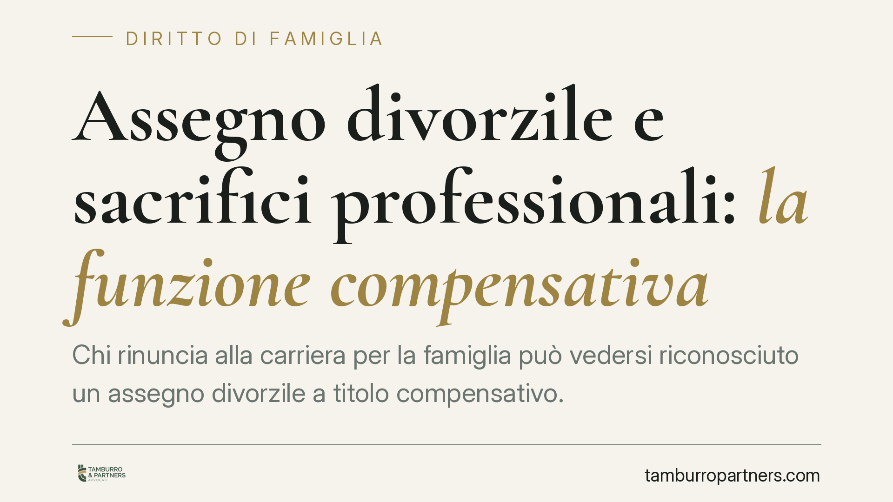

Assegno divorzile e sacrifici professionali: la funzione compensativa
Chi rinuncia alla carriera per la famiglia può vedersi riconosciuto un assegno divorzile a titolo compensativo. La Cassazione conferma che non conta il tenore di vita goduto durante il matrimonio, ma il contributo dato e i sacrifici sostenuti. A patto di provarli. Vediamo cosa significa in concreto per chi affronta una separazione o un divorzio.

Il punto
La Corte di Cassazione, con orientamento ormai consolidato, ribadisce che l'assegno divorzile ha una funzione anche compensativa: serve a riequilibrare le rinunce professionali ed economiche che un coniuge ha accettato per dedicarsi alla famiglia.
È un tema decisivo. Molte richieste di assegno vengono impostate ancora oggi sul vecchio criterio del "tenore di vita" matrimoniale, che la giurisprudenza ha superato da anni. Capire su cosa si fonda davvero il diritto all'assegno cambia l'esito della causa.
Inquadramento normativo
La base è l'art. 5, comma 6, della Legge 1° dicembre 1970, n. 898 (legge sul divorzio). La norma prevede che il giudice, in mancanza di adeguati mezzi in capo al richiedente e ove questi non possa procurarseli per ragioni oggettive, disponga un assegno tenendo conto di una serie di parametri: le condizioni dei coniugi, le ragioni della decisione, il contributo personale ed economico dato da ciascuno alla conduzione familiare e alla formazione del patrimonio comune, il reddito di entrambi, il tutto valutato anche in rapporto alla durata del matrimonio.
Le Sezioni Unite (sent. n. 18287/2018) hanno chiarito la natura composita dell'assegno: assistenziale, compensativa e perequativa insieme. Attenzione al punto: il profilo assistenziale non è scomparso. La mancanza di mezzi adeguati e l'impossibilità di procurarseli restano il presupposto di accesso. Solo superata questa soglia, il giudice quantifica l'assegno valorizzando anche la funzione compensativa, cioè il riconoscimento delle rinunce fatte per la famiglia. Le pronunce più recenti della Corte proseguono su questa linea.
Cosa significa in concreto
Il tenore di vita goduto durante il matrimonio non è più il metro di misura. Non basta dire "vivevamo bene, quindi mi spetta un assegno che mantenga quel livello".
Conta invece la fotografia complessiva: chi ha rinunciato a opportunità di lavoro, formazione o crescita professionale per occuparsi della casa e dei figli, e in che misura quella scelta ha avvantaggiato l'altro coniuge o penalizzato il richiedente.
Due esempi ricorrenti. Il coniuge che ha lasciato un impiego stabile per seguire i trasferimenti dell'altro. Oppure chi ha interrotto un percorso professionale per assistere i figli, ritrovandosi al momento del divorzio con minori competenze spendibili sul mercato.
Onere della prova. Chi chiede l'assegno deve dimostrare non solo la propria situazione economica, ma anche il nesso causale tra le scelte compiute in favore della famiglia e lo squilibrio attuale. Non è sufficiente affermare di aver "fatto sacrifici": occorre provare quali occasioni concrete siano state perse e che ciò dipenda proprio da quelle scelte condivise.
Durata del matrimonio. È un fattore che pesa. Un'unione lunga, in cui uno dei due si è dedicato stabilmente alla famiglia, rende più plausibile e più consistente la componente compensativa. Un matrimonio breve, di norma, giustifica riconoscimenti più contenuti o li esclude.
Distinzione fondamentale. L'assegno divorzile riguarda l'ex coniuge ed è cosa diversa dal contributo al mantenimento dei figli. Il mantenimento dei figli risponde a regole e presupposti propri, prescinde dalla colpa e dalla durata del matrimonio e non viene meno con l'autosufficienza dell'ex coniuge. Confonderli è un errore che indebolisce la posizione processuale.
Cosa fare in concreto
- Ricostruisci la tua storia professionale. Raccogli buste paga, contratti, offerte di lavoro rifiutate, dimissioni, percorsi formativi interrotti: documenta ciò a cui hai rinunciato e quando.
- Collega le rinunce alle scelte familiari. Prepara elementi che mostrino il nesso causale (trasferimenti dell'altro coniuge, nascita dei figli, accordi presi in famiglia).
- Fotografa la situazione economica attuale. Redditi, patrimonio, capacità effettiva di reinserimento nel mondo del lavoro considerata età e competenze.
- Tieni distinte le richieste. Imposta separatamente la domanda di assegno divorzile e quella relativa ai figli, con basi probatorie autonome.
- Fatti assistere presto. Consigliamo di impostare la strategia probatoria fin dalle prime fasi: molti diritti si perdono per prove non raccolte in tempo utile.
In sintesi
L'assegno divorzile non premia il tenore di vita passato, ma riequilibra le rinunce documentate. Chi lo chiede deve costruire con cura la prova del proprio contributo e del sacrificio subito. La differenza tra una domanda accolta e una respinta sta quasi sempre nella qualità della documentazione.
---
*Contributo informativo a cura di Tamburro & Partners Avvocati - Avv. Giuseppe Tamburro. Non costituisce parere legale.*
Ogni famiglia ha il suo equilibrio.
Separazione, divorzio, affidamento, assegno: se vuoi un confronto riservato su una specifica situazione, scrivi allo studio. Ti rispondiamo entro un giorno lavorativo.